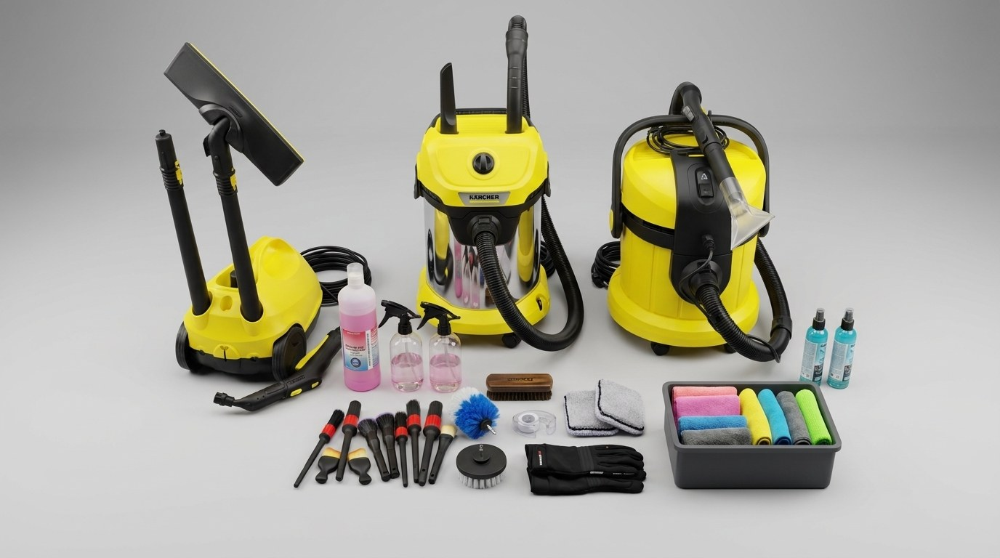

Le matos qui arrive chez toi.
3 Karcher pro, des microfibres triées par usage, des brosses détaillage, un drill brush, des produits dédiés. Pas du grande surface. Pas du bricolage.
Je préfère investir dans le matériel et facturer 60€ honnêtes, que rogner et te livrer un travail moyen.
Tu veux voir ce que ça donne sur ta voiture ? WhatsApp en bio.
— Nathan, Propre ou Rien Auto, Cournonsec
#NettoyageInterieurAuto #DetailingAuto #Cournonsec #Montpellier #Sète #Hérault #34660 #VoiturePropre #AspirationVoiture #ShampouineusePro #PropreOuRienAuto #ArtisanLocal #MicroEntreprise #Domicile #Mobile
Mes produits portent mon nom.
Quand tu prends rendez vous, ce que je sors devant toi, c'est ça : du matériel pro Karcher et mes propres produits étiquetés Propre ou Rien Auto. Détergent intérieur, nettoyant plastiques, désodorisant doux, et un petit secret pour les sièges tissu.
C'est pas du shampoing dispatché en bidons anonymes. C'est ce que J'AI CHOISI d'utiliser sur ta voiture.
Devis WhatsApp en 1h, à partir de 60€. Lien en bio.
#PropreOuRienAuto #DetailingFrance #DetailingMontpellier #Cournonsec #VoiturePropre #NettoyageInterieurAuto #ArtisanAuto #JeuneEntrepreneur #Hérault #LocalBusiness #ProduitsPros #Microfibres #Karcher
Geste numéro 1 : choisir la bonne microfibre.
J'ai 3 codes couleur :
🔵 bleu pour les vitres
rose pour les plastiques intérieurs
🟢 vert pour les sièges et tissus
Une microfibre vitres qui passe sur un plastique laisse des micro rayures que tu vois deux mois plus tard. Une qui passe sur un siège après une vitre laisse un voile gras.
Ce qu'on appelle "faire les choses bien", c'est aussi ça.
Premier client ? Je me déplace chez toi sur Cournonsec, Montpellier, Sète et 30 km alentour. WhatsApp en bio.
#DetailingTips #MicrofibresPro #NettoyageAuto #PropreOuRienAuto #Cournonsec #Montpellier #Sète #ArtisanLocal #VoitureFamiliale #VoiturePropre #ConseilDetailing #Hérault
Si Facebook lié à Insta dans Paramètres Meta, le carrousel se publie automatiquement. Mercredi 18h.

Mercredi 18h · Facebook
Post Facebook carrousel (3 photos)
Le matos qu'on amène chez vous, vu de près.
Beaucoup nous demandent "tu utilises quoi ?". Voilà la réponse, sans filtre.
3 Karcher pro : nettoyeur vitres SE, aspirateur eau et poussière, injecteur extracteur. Une caisse de microfibres triées par couleur selon l'usage. Des brosses détaillage qualité atelier. Un drill brush pour les sièges incrustés. Et des produits qu'on a sélectionnés un par un, certains étiquetés à notre nom.
On préfère investir dans le matériel et facturer des prix justes (60€ à 110€ selon l'état), plutôt que rogner et bâcler.
On se déplace à votre domicile sur Cournonsec, Montpellier, Sète et 30 km alentour. Devis en 1 heure sur WhatsApp.
📱 +33 7 61 10 97 50
🌐 propreourienauto.fr
Type Mise à jour, durée 7 jours. Renouveler à J+7 en re-publiant la même chose ou la variante.
À publier dans la semaine · Google Business Profile
Post Google Business (700 char max)
Notre matériel pro, visible chez vous le jour J.
3 Karcher (nettoyeur vitres, aspirateur eau et poussière, injecteur extracteur), microfibres triées par usage, brosses détaillage, drill brush, produits dédiés dont certains à notre nom.
Pas du grande surface. Du matos d'artisan, transporté propre, utilisé propre.
Tarifs intérieur :
• Essentiel 60€
• Intérieur + sièges 85€
• Remise à niveau dès 110€
Devis WhatsApp en 1h.
Stickers à ajouter dans l'app : logo PORA centre haut, texte gros bleu "PROPRE OU RIEN", sous titre "Le matos qui fait la différence", sticker compte à rebours intervention, sticker WhatsApp bas.
{kind=link}
{kind=link}
{kind=link}
{kind=link}
{kind=link}